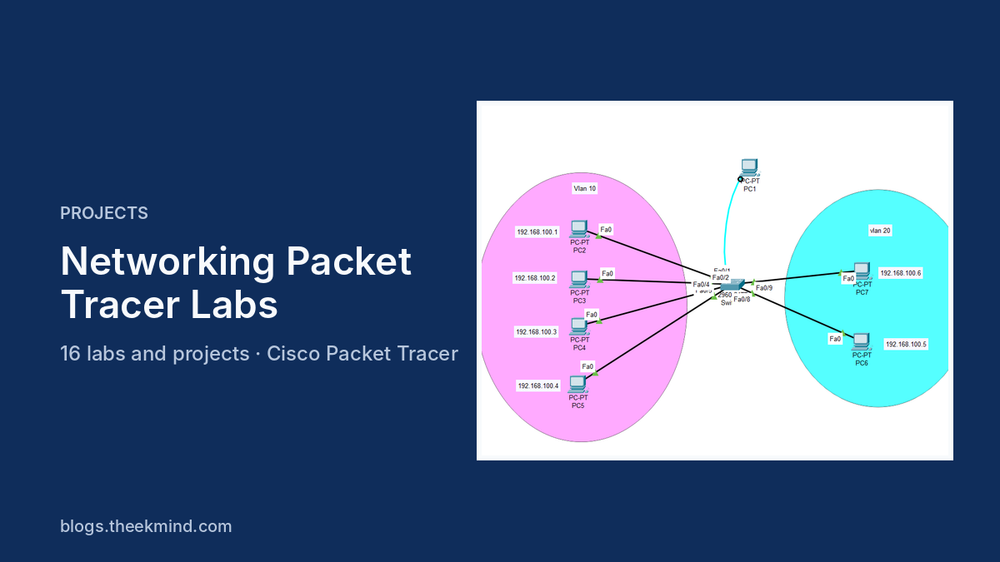

Toastmasters Timer
A live meeting timer for the club Timer: full-screen colour cards, a speaker roster and a print-ready A4 report. Used at real club meetings, with accounts and a GitHub Actions deploy.
Software, networking and web projects I built while learning, with the code on GitHub. Five of them have full case studies.
A live meeting timer for the club Timer: full-screen colour cards, a speaker roster and a print-ready A4 report. Used at real club meetings, with accounts and a GitHub Actions deploy.

A desktop app for the Ceylon Electricity Board, Haliela branch, replacing a manual ledger. Business-rule engine, 22+ permissions, audit log, Sinhala and English reports.

A supermarket point of sale and stock system with three roles, receipts and reports. Runs with one docker-compose up.

15+ Cisco Packet Tracer labs with working .pkt files, from a first LAN to an enterprise design with VLANs, ACLs and SSH.

An interactive 3D model of an 80-workstation campus lab network: 4 VLANs, a Layer 3 core, DHCP relay, NAT and live packet animation. Orbit it, click any device, watch the traffic.
Certificate tracking and verification with an admin dashboard, tested end to end with Selenium WebDriver.
Small teaching projects: a school library system, an institute admission system and a certificate system.